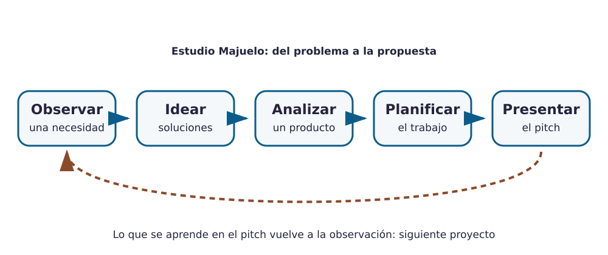

Contenido
Bienvenida al Estudio Majuelo
Durante este curso vuestro grupo funciona como un estudio tecnológico: un equipo que detecta problemas reales del instituto y del pueblo y diseña soluciones. En esta primera unidad no vais a fabricar nada todavía. Vais a aprender lo que hace cualquier estudio antes de construir: observar, idear, analizar y planificar… y contarlo bien.

El reto
En equipos de tres o cuatro personas saldréis a observar el centro y su entorno (accesibilidad, patio, reciclaje, ruido, aparcamiento de bicis, sombra, agua…) y elegiréis una necesidad real. Después analizaréis un producto que ya existe y que intenta resolverla, propondréis vuestra propia solución y la presentaréis a la clase en un pitch de tres minutos.
Qué entregarás
- Dossier de propuesta. Necesidad elegida, análisis del producto existente, ideas,
bocetos, plan de trabajo, materiales y criterio de sostenibilidad. Se abre en la primera sesión y se
completa por apartados. Tarea de Moodle Dossier de propuesta, archivo
dossier_propuesta.pdf. - Pitch de la propuesta. Tres minutos ante la clase. Se valora en el momento y la calificación aparece en la tarea de Moodle Pitch de la propuesta (sin subir archivo).
- Bitácora de equipo. Registro breve de cada sesión: quién hizo qué, foto del tablero Kanban y decisiones tomadas. Forma parte del dossier; la calificación aparece en la tarea Bitácora de equipo (sin subir archivo).
- Análisis de producto. Ficha de análisis del ciclo de vida de un objeto real. Tarea
Análisis de producto, archivo
analisis_producto.pdf. - Cuestionario: proyectos y ciclo de vida. Cuestionario en Moodle, individual, sobre lo trabajado en la unidad.
Nombres de archivo
Usa exactamente los nombres indicados, sin añadir tu nombre ni apellidos: Moodle ya sabe quién entrega cada archivo.
Cómo se trabaja en el estudio
Cada equipo reparte cuatro roles que rotan cada pocas sesiones, de modo que todo el mundo pase por todos:
| Rol | Se encarga de… |
|---|---|
| Coordinación | Que el equipo sepa qué toca hacer, mover el tablero Kanban y vigilar el tiempo. |
| Documentación | Escribir la bitácora, guardar fotos y bocetos, tener el dossier al día. |
| Portavocía | Hablar en nombre del equipo, preguntar dudas y presentar avances. |
| Materiales y calidad | Cuidar el material, comprobar que lo entregado cumple lo que se pide. |
Cómo trabajar con las plantillas
Crea tus copias de trabajo
- Crear una copia del dossier de propuesta (una por equipo)
- Crear una copia de la ficha de análisis de producto (una por persona)
- Abre el enlace y confirma que quieres hacer una copia. Se guarda en tu Drive.
- El documento de equipo se comparte solo entre sus integrantes.
- Trabaja en el documento durante toda la unidad; no lo entregues hasta que esté completo.
- Para entregar: Archivo → Descargar → Documento PDF y sube ese PDF a la tarea de Moodle.
Mapa de la unidad
- Proyecto tecnológico y Kanban
- Observar necesidades
- Técnicas de ideación
- Ciclo de vida de un producto
- Materiales y sostenibilidad
- El dossier de propuesta
- El pitch de tres minutos
Material de apoyo: chuleta y listas de comprobación · guion de la salida de observación.